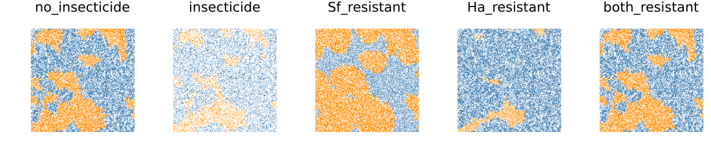
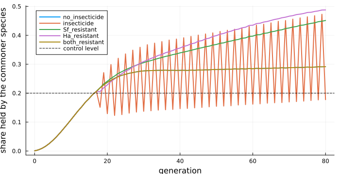
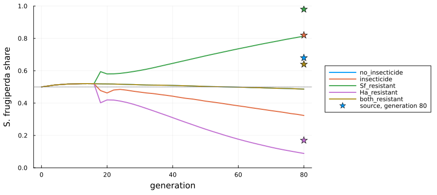

Two pests in a Bt cotton refuge
Simon Frost
Overview
Bt cotton is planted with a refuge of non-Bt cotton, where susceptible pests survive and slow the evolution of resistance to Bt. Two caterpillars, Spodoptera frugiperda and Helicoverpa armigera, compete in such refuges, and insecticides are sprayed there. Malaquias et al. (2021) built a cellular automaton of a refuge from field data on how well each species survives alone and together, at low and high density. They asked which species comes to dominate under five insecticide and resistance scenarios. The model has no Bt plants in it: every cell is a refuge plant, and resistance means resistance to the insecticide.
The source leaves several mechanisms unstated: the encounter and colonisation probabilities, the role of adult emergence, how resistance works, and where the first insects are placed. Its Table 1 also contradicts its Figure 1. This model is an adaptation that fills these gaps in stated ways. It reproduces some of the source’s results and not others, and the vignette shows which.
ENV["GKSwstype"] = "100"
using EcologicalCellularAutomata
using CellularAutomataCore
using Plots
using StatisticsThe model
A 1000 × 1000 torus of plants, each empty or holding one of the two species, is updated once a generation from its Moore neighbours:
- an occupied plant loses its larva to natural enemies with probability 0.25; then, in a sprayed generation, to insecticide with probability 0.99, unless its species is resistant; then to competition;
- survival in competition depends on density (high if at least four neighbours are occupied) and on whether the larva meets the other species, which it does with probability equal to the share of its neighbours holding that species;
- an empty plant is colonised by S. frugiperda with probability
0.86 n₁R₁ / (n₁R₁ + n₂R₂), and failing that by H. armigera likewise, wherenᵢare the neighbours holding each species andRᵢtheir fecundities (400 and 725).
The insecticide is sprayed in every generation in which either species occupies at least a fifth of the field. That decision needs the whole field, so it is a callback stored with the problem.
model = build(:bt_cotton_refuge)CAModel bt_cotton_refuge
Malaquias et al. (2021) S. frugiperda and H. armigera in a Bt cotton refuge
states:
plant::Int8 = 0 ∈ 0:2 # 0 empty, 1 S. frugiperda, 2 H. armigera
parameters:
mortality = 0.25 # natural mortality and dispersal
kill = 0.99 # insecticide mortality
spray = false # this generation is sprayed (set by the callback)
resistant_Sf = false # S. frugiperda resists the insecticide
resistant_Ha = false # H. armigera resists the insecticide
escape = 1.0 # probability a resistant larva escapes the spray
threshold = 0.5 # occupied share of neighbours for high density
fecundity_Sf = 400.0 # reproductive capacity of S. frugiperda
fecundity_Ha = 725.06 # reproductive capacity of H. armigera
emergence = 0.86 # adult emergence, scaling colonisation
sL_Sf = 0.75 # larval survival
sL_Ha = 0.8 # larval survival
sL_Sf_Ha = 0.6 # larval survival
sL_Ha_Sf = 0.49 # larval survival
sH_Sf = 0.48 # larval survival
sH_Ha = 0.22 # larval survival
sH_Sf_Ha = 0.18 # larval survival
sH_Ha_Sf = 0.47 # larval survival
rule: LocalRule(<anonymous function>, Moore(1))The survival probabilities, as the source’s Figure 1 gives them (the default) and as its Table 1 does:
fig1, tab1 = bt_cotton_survival(:figure1), bt_cotton_survival(:table1)
[(parameter=k, figure_1=fig1[k], table_1=tab1[k]) for k in keys(fig1)]8-element Vector{@NamedTuple{parameter::Symbol, figure_1::Float64, table_1::Float64}}:
(parameter = :sL_Sf, figure_1 = 0.75, table_1 = 0.63)
(parameter = :sL_Ha, figure_1 = 0.8, table_1 = 0.46)
(parameter = :sL_Sf_Ha, figure_1 = 0.6, table_1 = 0.58)
(parameter = :sL_Ha_Sf, figure_1 = 0.49, table_1 = 0.9)
(parameter = :sH_Sf, figure_1 = 0.48, table_1 = 0.31)
(parameter = :sH_Ha, figure_1 = 0.22, table_1 = 0.38)
(parameter = :sH_Sf_Ha, figure_1 = 0.18, table_1 = 0.11)
(parameter = :sH_Ha_Sf, figure_1 = 0.47, table_1 = 0.16)At low density H. armigera survives a little better alone. At high density S. frugiperda does, unless the two meet, when H. armigera wins.
The five scenarios
Each scenario starts from 500 individuals of each species, scattered at random, and runs for 80 generations:
scenarios = (:no_insecticide, :insecticide, :Sf_resistant, :Ha_resistant, :both_resistant)
runs = Dict(sc => solve(problem(:bt_cotton_refuge; scenario=sc, seed=1); saveat=1)
for sc in scenarios)
fieldmap(u, title) = heatmap(u[1:250, 1:250]; c=[:white, :darkorange, :steelblue],
clims=(0, 2), aspect_ratio=:equal, framestyle=:none,
colorbar=false, title)
plot([fieldmap(runs[sc].u[end], String(sc)) for sc in scenarios]...; layout=(1, 5),
size=(1100, 250))
A corner of 250 × 250 plants at generation 80: S. frugiperda orange, H. armigera blue, empty plants white. As in the source’s Figure 3, each species holds large connected domains.
Spraying starts when the commoner species reaches the control level, a fifth of the field, around generation 17. Here is the share of the field held by the commoner species:
commoner(sol) = [max(count(==(1), u), count(==(2), u)) / length(u) for u in sol.u]
plot(0:80, [commoner(runs[sc]) for sc in scenarios]; lw=2,
label=permutedims(collect(String.(scenarios))), xlabel="generation",
ylabel="share held by the commoner species", legend=:topleft, size=(700, 360))
hline!([0.2]; ls=:dash, color=:black, label="control level")
Without resistance, a sprayed generation drops below the control level, the next is not sprayed and climbs back above it, and the field alternates. With one species resistant, the spray removes only the other, and the field fills up again. When both are resistant, the spray changes nothing, and that run is the same as the run without insecticide, whose curve it hides.
Dominance
The source’s Figure 4 plots each species’ share of the occupied plants. Read off that figure, S. frugiperda ends at about 0.68, 0.82, 0.98, 0.17 and 0.64 in the five scenarios: it dominates in all but the one where only H. armigera is resistant. Three runs each here:
dominance(sc; seeds=1:3) = mean([[bt_cotton_dominance(u).Sf
for u in solve(problem(:bt_cotton_refuge; scenario=sc,
seed=s); saveat=2).u]
for s in seeds])
dom = Dict(sc => dominance(sc) for sc in scenarios)
source_end = Dict(:no_insecticide => 0.68, :insecticide => 0.82, :Sf_resistant => 0.98,
:Ha_resistant => 0.17, :both_resistant => 0.64)
plot(0:2:80, [dom[sc] for sc in scenarios]; lw=2, label=permutedims(collect(String.(scenarios))),
xlabel="generation", ylabel="S. frugiperda share", legend=:outerright, ylims=(0, 1),
size=(850, 380), left_margin=4Plots.mm, bottom_margin=5Plots.mm)
scatter!(fill(80, 5), [source_end[sc] for sc in scenarios]; color=1:5, label="source, generation 80",
marker=:star5, ms=7)
hline!([0.5]; ls=:dot, color=:gray, label="")
[(scenario=sc, model=round(dom[sc][end]; digits=2), source=source_end[sc]) for sc in scenarios]5-element Vector{@NamedTuple{scenario::Symbol, model::Float64, source::Float64}}:
(scenario = :no_insecticide, model = 0.49, source = 0.68)
(scenario = :insecticide, model = 0.32, source = 0.82)
(scenario = :Sf_resistant, model = 0.81, source = 0.98)
(scenario = :Ha_resistant, model = 0.09, source = 0.17)
(scenario = :both_resistant, model = 0.49, source = 0.64)The two scenarios in which resistance differs between the species come out as in the source. S. frugiperda dominates when only it is resistant, and H. armigera when only it is. In the other three scenarios the source has S. frugiperda winning, and here H. armigera holds slightly more than half without insecticide or with both species resistant, and clearly more with insecticide and no resistance. The first case and the last coincide, as both species escape the spray.
The unstated choices
The outcome of competition depends on mechanisms the source does not specify. Four alternative readings, on a 300 × 300 field without insecticide, three runs each:
variants = ["as built" => (;), "Table 1 survival" => bt_cotton_survival(:table1),
"no emergence factor" => (emergence=1.0,), "equal fecundity" => (fecundity_Ha=400.0,),
"high density from 5 neighbours" => (threshold=0.625,)]
endshare(pmap) = mean(bt_cotton_dominance(solve(problem(:bt_cotton_refuge; n=300, initial=45,
seed=s, pmap);
save_everystep=false).u[end]).Sf
for s in 1:3)
[(reading=name, Sf_share_at_80=round(endshare(pm); digits=2)) for (name, pm) in variants]5-element Vector{@NamedTuple{reading::String, Sf_share_at_80::Float64}}:
(reading = "as built", Sf_share_at_80 = 0.51)
(reading = "Table 1 survival", Sf_share_at_80 = 0.35)
(reading = "no emergence factor", Sf_share_at_80 = 0.59)
(reading = "equal fecundity", Sf_share_at_80 = 0.9)
(reading = "high density from 5 neighbours", Sf_share_at_80 = 0.49)The colonisation weights decide the outcome. Table 1’s survival values favour H. armigera still more. With the fecundities the source gives, H. armigera colonises empty plants almost twice as readily, and that outweighs its poorer survival at high density. With equal fecundities S. frugiperda takes nine tenths of the field. Applying adult emergence to colonisation tilts the balance a little further towards H. armigera, and leaving it out gives S. frugiperda a slight majority, as in the source’s first scenario. The source’s results must rest on a colonisation rule that favours S. frugiperda more than its description suggests.
Deviations from the source
foreach(d -> println("- ", d), model_info(:bt_cotton_refuge).deviations)- Survival values follow the source's Figure 1 and rule text; its Table 1 gives different values, available as bt_cotton_survival(:table1).
- The encounter probability is not given in the source; a larva meets the other species with probability equal to the share of its eight neighbours holding it.
- The colonisation probabilities are not given as formulas; an empty cell is colonised by S. frugiperda with probability emergence * n1 R1 / (n1 R1 + n2 R2), and failing that by H. armigera likewise.
- The role of adult emergence (0.86) is not stated in the source; it scales both colonisation probabilities.
- The resistance mechanism is not specified (the source gives only an initial resistant frequency of 0.0625 under Hardy-Weinberg equilibrium); a larva of a resistant species escapes the spray with probability escape (default 1).
- High density means at least half of the eight neighbours occupied (the source writes both 'greater than or equal to' and 'greater than' 0.5).
- The insecticide acts after natural mortality and before competition; the source orders it after natural mortality only.
- The spray decision uses the state at the end of the previous generation.
- The initial individuals are placed on distinct uniformly random cells; the source does not say where they were placed, nor how many replicates it ran.Malaquias, José Bruno, Daniela R. S. Santana, Paulo E. Degrande, et al.
- “Shifts in Ecological Dominance Between Two Lepidopteran Species
in Refuge Areas of Bt Cotton.” Insects 12 (2): 157. https://doi.org/10.3390/insects12020157.